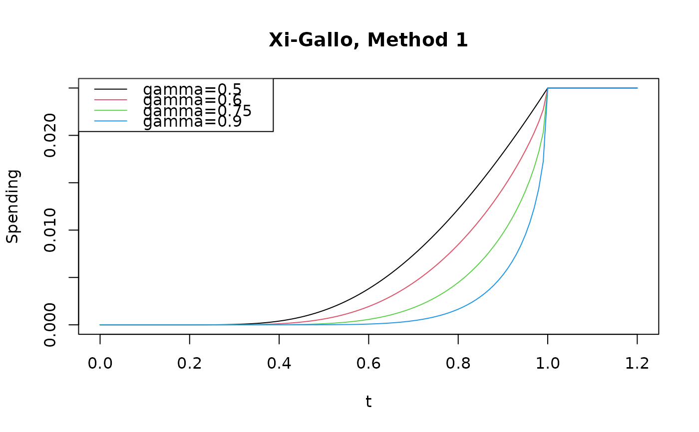
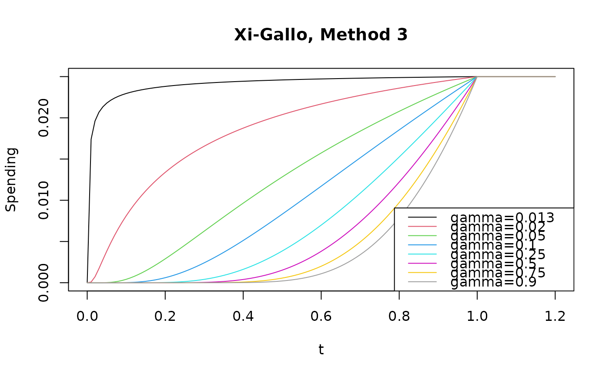

Error spending functions based on Xi and Gallo (2019).
The intention of these spending functions is to provide bounds where the
conditional error at an efficacy bound is approximately equal to the
conditional error rate for crossing the final analysis bound.
This is explained in greater detail in
vignette("ConditionalErrorSpending").
Arguments
- alpha
Real value \(> 0\) and no more than 1. Normally,
alpha = 0.025for one-sided Type I error specification oralpha = 0.1for Type II error specification. However, this could be set to 1 if for descriptive purposes you wish to see the proportion of spending as a function of the proportion of sample size/information.- t
A vector of points with increasing values from 0 to 1, inclusive. Values of the proportion of sample size/information for which the spending function will be computed.
- param
This is the gamma parameter in the Xi and Gallo spending function paper, distinct for each function. See the details section for functional forms and range of param acceptable for each spending function.
Details
Xi and Gallo use an additive boundary for group sequential designs with
connection to conditional error.
Three spending functions are defined: sfXG1(), sfXG2(),
and sfXG3().
Method 1 is defined for \(\gamma \in [0.5, 1)\) as
$$f(Z_K \ge u_K | Z_k = u_k) = 2 - 2\times \Phi\left(\frac{z_{\alpha/2} - z_\gamma\sqrt{1-t}}{\sqrt{t}} \right).$$
Method 2 is defined for \(\gamma \in [1 - \Phi(z_{\alpha/2}/2), 1)\) as
$$f_\gamma(t; \alpha)=2-2\Phi \left( \Phi^{-1}(1-\alpha/2)/ t^{1/2} \right).$$
Method 3 is defined as for \(\gamma \in (\alpha/2, 1)\) as
$$f(t; \alpha)= 2 - 2\times \Phi\left(\frac{z_{\alpha/2} - z_\gamma(1-\sqrt t)}{\sqrt t} \right).$$
References
Jennison C and Turnbull BW (2000), Group Sequential Methods with Applications to Clinical Trials. Boca Raton: Chapman and Hall.
Xi D and Gallo P (2019), An additive boundary for group sequential designs with connection to conditional error. Statistics in Medicine; 38 (23), 4656–4669.
Author
Keaven Anderson keaven_anderson@merck.com
vignette("SpendingFunctionOverview"), gsDesign,
vignette("gsDesignPackageOverview")
Examples
# Plot conditional error spending spending functions across
# a range of values of interest
pts <- seq(0, 1.2, 0.01)
pal <- palette()
plot(
pts,
sfXG1(0.025, pts, 0.5)$spend,
type = "l", col = pal[1],
xlab = "t", ylab = "Spending", main = "Xi-Gallo, Method 1"
)
lines(pts, sfXG1(0.025, pts, 0.6)$spend, col = pal[2])
lines(pts, sfXG1(0.025, pts, 0.75)$spend, col = pal[3])
lines(pts, sfXG1(0.025, pts, 0.9)$spend, col = pal[4])
legend(
"topleft",
legend = c("gamma=0.5", "gamma=0.6", "gamma=0.75", "gamma=0.9"),
col = pal[1:4],
lty = 1
)

plot(
pts,
sfXG2(0.025, pts, 0.14)$spend,
type = "l", col = pal[1],
xlab = "t", ylab = "Spending", main = "Xi-Gallo, Method 2"
)
lines(pts, sfXG2(0.025, pts, 0.25)$spend, col = pal[2])
lines(pts, sfXG2(0.025, pts, 0.5)$spend, col = pal[3])
lines(pts, sfXG2(0.025, pts, 0.75)$spend, col = pal[4])
lines(pts, sfXG2(0.025, pts, 0.9)$spend, col = pal[5])
legend(
"topleft",
legend = c("gamma=0.14", "gamma=0.25", "gamma=0.5", "gamma=0.75", "gamma=0.9"),
col = pal[1:5],
lty = 1
)
plot(
pts,
sfXG3(0.025, pts, 0.013)$spend,
type = "l", col = pal[1],
xlab = "t", ylab = "Spending", main = "Xi-Gallo, Method 3"
)
lines(pts, sfXG3(0.025, pts, 0.02)$spend, col = pal[2])
lines(pts, sfXG3(0.025, pts, 0.05)$spend, col = pal[3])
lines(pts, sfXG3(0.025, pts, 0.1)$spend, col = pal[4])
lines(pts, sfXG3(0.025, pts, 0.25)$spend, col = pal[5])
lines(pts, sfXG3(0.025, pts, 0.5)$spend, col = pal[6])
lines(pts, sfXG3(0.025, pts, 0.75)$spend, col = pal[7])
lines(pts, sfXG3(0.025, pts, 0.9)$spend, col = pal[8])
legend(
"bottomright",
legend = c(
"gamma=0.013", "gamma=0.02", "gamma=0.05", "gamma=0.1",
"gamma=0.25", "gamma=0.5", "gamma=0.75", "gamma=0.9"
),
col = pal[1:8],
lty = 1
)
